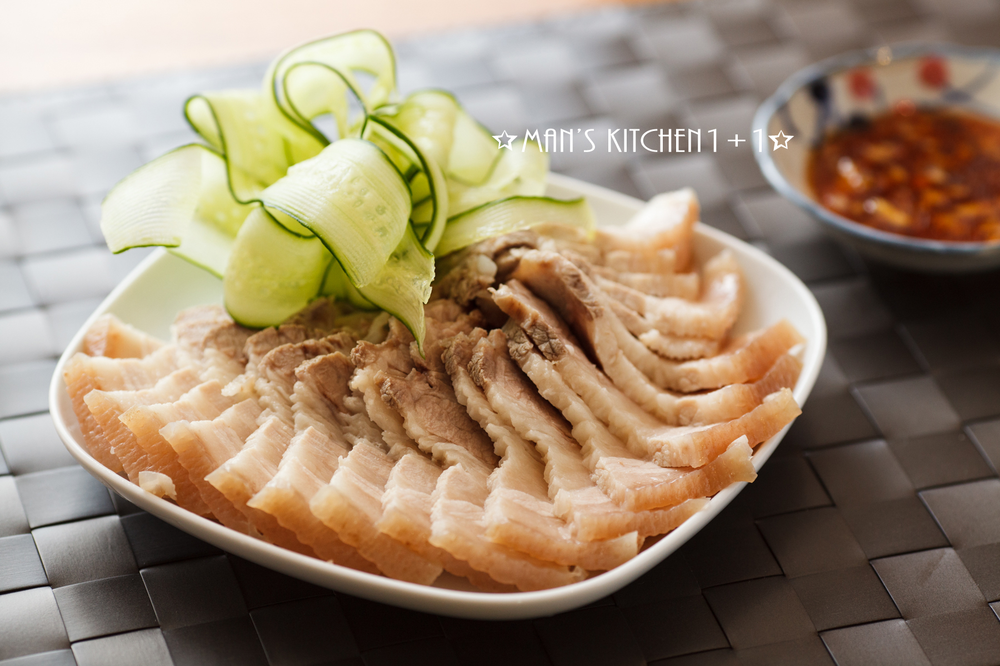

文字+圖片練習 學號:90934266 姓名:王麗雯 第二頁:蒜泥白肉
料理陳列展示
蒜泥白肉
準備材料
| A:食材 |
五花肉 |
蒜泥2匙 |
醬油膏2匙 |
香油1匙
|
| B:調味料 |
無鹽奶油 30g |
水 60ml |
動物性鮮奶油 60ml |
鹽 1/4茶匙 |
A:食材
B:調味料
- 無鹽奶油 30g
- 水 60ml
- 動物性鮮奶油 60ml
- 鹽 1/4茶匙
1.先燒開水，把肉燙一下
2.再燒一鍋開水，把準備的蔥段、薑片、米酒放進去，滾開後，把肉放進去，轉小火。
3.肉冷卻好了後就切片，擺盤，然後把調好的醬汁淋上去就OK了
